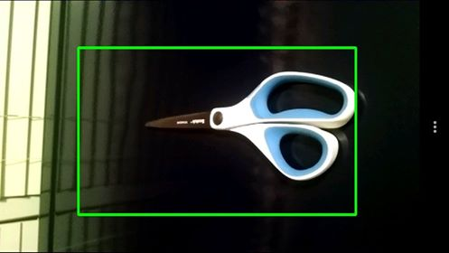

High Altitude Balloon Horizon Detection
I was asked by the RIT space exploration club to develop a piece of software to detect the horizon in images aquired on high altitude balloons. This code was run on a raspberry pi flying at altitudes of 60,000+ feet! Here is a good horizon detection, with the angle offset computed in a counter-clockwise manner, printed in degrees. Have a look at the GitHub Repo.

Haar-based cascade classifier training
I have compiled a tutorial on how to train Haar-based cascade classifiers using the opencv haartraining app. My tutorial as well as some example usage can be found on the Haar cascade training tutorial page.
Haar-based cascade Mobile Testing Application
I have developed an app that can test these Haar-based cascade files on the go. Paste the URL of a plain text XML file into the text box and hit the button! once the link text disappears you can the click on "my_classifier" from the classifier selection menu. This menu is obtained by clicking on the three dots at the bottom of the screen. This app is available on android devices through the Google play store here.

Augmented Reality Using OpenCV
I have been working on an augmented reality vision system that will allow one to see different 3D projections using OpenCV. depending on the particular icon in the corner of the checkerboard target, the corresponding 3D image will come up. The icons are recognized by a Haar classifier. The code can be found on my Github. See below for a video of it in action.